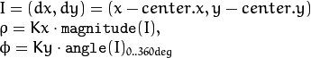
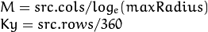

Geometric Image Transformations¶
The functions in this section perform various geometrical transformations of 2D images. They do not change the image content but deform the pixel grid and map this deformed grid to the destination image. In fact, to avoid sampling artifacts, the mapping is done in the reverse order, from destination to the source. That is, for each pixel  of the destination image, the functions compute coordinates of the corresponding “donor” pixel in the source image and copy the pixel value:
of the destination image, the functions compute coordinates of the corresponding “donor” pixel in the source image and copy the pixel value:
In case when you specify the forward mapping , the OpenCV functions first compute the corresponding inverse mapping and then use the above formula.
The actual implementations of the geometrical transformations, from the most generic
remap() and to the simplest and the fastest
resize() , need to solve two main problems with the above formula:
- Extrapolation of non-existing pixels. Similarly to the filtering functions described in the previous section, for some
 , either one of
, or
, or both of them may fall outside of the image. In this case, an extrapolation method needs to be used. OpenCV provides the same selection of extrapolation methods as in the filtering functions. In addition, it provides the method
, either one of
, or
, or both of them may fall outside of the image. In this case, an extrapolation method needs to be used. OpenCV provides the same selection of extrapolation methods as in the filtering functions. In addition, it provides the method BORDER_TRANSPARENT. This means that the corresponding pixels in the destination image will not be modified at all. - Interpolation of pixel values. Usually
and
are floating-point numbers. This means that
can be either an affine or perspective transformation, or radial lens distortion correction, and so on. So, a pixel value at fractional coordinates needs to be retrieved. In the simplest case, the coordinates can be just rounded to the nearest integer coordinates and the corresponding pixel can be used. This is called a nearest-neighbor interpolation. However, a better result can be achieved by using more sophisticated interpolation methods
, where a polynomial function is fit into some neighborhood of the computed pixel
, and then the value of the polynomial at
is taken as the interpolated pixel value. In OpenCV, you can choose between several interpolation methods. See
resize()for details.
convertMaps¶
Converts image transformation maps from one representation to another.
-
C++:
convertMaps(InputArray map1, InputArray map2, OutputArray dstmap1, OutputArray dstmap2, int dstmap1type, bool nninterpolation=false )¶
-
Python:
cv2.convertMaps(map1, map2, dstmap1type[, dstmap1[, dstmap2[, nninterpolation]]]) → dstmap1, dstmap2¶ Parameters: - map1 – The first input map of type
CV_16SC2,CV_32FC1, orCV_32FC2. - map2 – The second input map of type
CV_16UC1,CV_32FC1, or none (empty matrix), respectively. - dstmap1 – The first output map that has the type
dstmap1typeand the same size assrc. - dstmap2 – The second output map.
- dstmap1type – Type of the first output map that should be
CV_16SC2,CV_32FC1, orCV_32FC2. - nninterpolation – Flag indicating whether the fixed-point maps are used for the nearest-neighbor or for a more complex interpolation.
- map1 – The first input map of type
The function converts a pair of maps for
remap() from one representation to another. The following options ( (map1.type(), map2.type()) (dstmap1.type(), dstmap2.type()) ) are supported:
- . This is the most frequently used conversion operation, in which the original floating-point maps (see
remap()) are converted to a more compact and much faster fixed-point representation. The first output array contains the rounded coordinates and the second array (created only whennninterpolation=false) contains indices in the interpolation tables. - . The same as above but the original maps are stored in one 2-channel matrix.
- Reverse conversion. Obviously, the reconstructed floating-point maps will not be exactly the same as the originals.
See also
getAffineTransform¶
Calculates an affine transform from three pairs of the corresponding points.
-
C++:
getAffineTransform(InputArray src, InputArray dst)¶
-
C++:
getAffineTransform(const Point2f src[], const Point2f dst[])¶
-
Python:
cv2.getAffineTransform(src, dst) → retval¶
-
C:
cvGetAffineTransform(const CvPoint2D32f* src, const CvPoint2D32f* dst, CvMat* map_matrix)¶
-
Python:
cv.GetAffineTransform(src, dst, mapMatrix) → None¶ Parameters: - src – Coordinates of triangle vertices in the source image.
- dst – Coordinates of the corresponding triangle vertices in the destination image.
The function calculates the  matrix of an affine transform so that:
matrix of an affine transform so that:
where
See also
getPerspectiveTransform¶
Calculates a perspective transform from four pairs of the corresponding points.
-
C++:
getPerspectiveTransform(InputArray src, InputArray dst)¶
-
C++:
getPerspectiveTransform(const Point2f src[], const Point2f dst[])¶
-
Python:
cv2.getPerspectiveTransform(src, dst) → retval¶
-
C:
cvGetPerspectiveTransform(const CvPoint2D32f* src, const CvPoint2D32f* dst, CvMat* map_matrix)¶
-
Python:
cv.GetPerspectiveTransform(src, dst, mapMatrix) → None¶ Parameters: - src – Coordinates of quadrangle vertices in the source image.
- dst – Coordinates of the corresponding quadrangle vertices in the destination image.
The function calculates the  matrix of a perspective transform so that:
matrix of a perspective transform so that:
where
getRectSubPix¶
Retrieves a pixel rectangle from an image with sub-pixel accuracy.
-
C++:
getRectSubPix(InputArray image, Size patchSize, Point2f center, OutputArray patch, int patchType=-1 )¶
-
Python:
cv2.getRectSubPix(image, patchSize, center[, patch[, patchType]]) → patch¶
-
C:
cvGetRectSubPix(const CvArr* src, CvArr* dst, CvPoint2D32f center)¶
-
Python:
cv.GetRectSubPix(src, dst, center) → None¶ Parameters: - src – Source image.
- patchSize – Size of the extracted patch.
- center – Floating point coordinates of the center of the extracted rectangle within the source image. The center must be inside the image.
- dst – Extracted patch that has the size
patchSizeand the same number of channels assrc. - patchType – Depth of the extracted pixels. By default, they have the same depth as
src.
The function getRectSubPix extracts pixels from src :
where the values of the pixels at non-integer coordinates are retrieved
using bilinear interpolation. Every channel of multi-channel
images is processed independently. While the center of the rectangle
must be inside the image, parts of the rectangle may be
outside. In this case, the replication border mode (see
borderInterpolate() ) is used to extrapolate
the pixel values outside of the image.
See also
getRotationMatrix2D¶
Calculates an affine matrix of 2D rotation.
-
C++:
getRotationMatrix2D(Point2f center, double angle, double scale)¶
-
Python:
cv2.getRotationMatrix2D(center, angle, scale) → retval¶
-
C:
cv2DRotationMatrix(CvPoint2D32f center, double angle, double scale, CvMat* map_matrix)¶
-
Python:
cv.GetRotationMatrix2D(center, angle, scale, mapMatrix) → None¶ Parameters: - center – Center of the rotation in the source image.
- angle – Rotation angle in degrees. Positive values mean counter-clockwise rotation (the coordinate origin is assumed to be the top-left corner).
- scale – Isotropic scale factor.
- map_matrix – The output affine transformation, 2x3 floating-point matrix.
The function calculates the following matrix:
where
The transformation maps the rotation center to itself. If this is not the target, adjust the shift.
See also
invertAffineTransform¶
Inverts an affine transformation.
-
C++:
invertAffineTransform(InputArray M, OutputArray iM)¶
-
Python:
cv2.invertAffineTransform(M[, iM]) → iM¶ Parameters: - M – Original affine transformation.
- iM – Output reverse affine transformation.
The function computes an inverse affine transformation represented by
matrix M :
The result is also a
matrix of the same type as M .
LinearPolar¶
Remaps an image to polar space.
-
C:
cvLinearPolar(const CvArr* src, CvArr* dst, CvPoint2D32f center, double maxRadius, int flags=CV_INTER_LINEAR+CV_WARP_FILL_OUTLIERS )¶ Parameters: - src – Source image
- dst – Destination image. It will have same size and type as src.
- center – The transformation center;
- maxRadius – The radius of the bounding circle to transform. It determines the inverse magnitude scale parameter too. See below
- flags –
A combination of interpolation methods and the following optional flags:
- CV_WARP_FILL_OUTLIERS fills all of the destination image pixels. If some of them correspond to outliers in the source image, they are set to zero
- CV_WARP_INVERSE_MAP See below
The function cvLinearPolar transforms the source image using the following transformation:
Forward transformation (
CV_WARP_INVERSE_MAPis not set):Inverse transformation (
CV_WARP_INVERSE_MAPis set):
where

and
Note
- The function can not operate in-place.
- To calculate magnitude and angle in degrees
cvCartToPolar()is used internally thus angles are measured from 0 to 360 with accuracy about 0.3 degrees. - An example using the LinearPolar operation can be found at opencv_source_code/samples/c/polar_transforms.c
LogPolar¶
Remaps an image to log-polar space.
-
C:
cvLogPolar(const CvArr* src, CvArr* dst, CvPoint2D32f center, double M, int flags=CV_INTER_LINEAR+CV_WARP_FILL_OUTLIERS )¶
-
Python:
cv.LogPolar(src, dst, center, M, flags=CV_INTER_LINEAR+CV_WARP_FILL_OUTLIERS) → None¶ Parameters: - src – Source image
- dst – Destination image. It will have same size and type as src.
- center – The transformation center; where the output precision is maximal
- M – Magnitude scale parameter. It determines the radius of the bounding circle to transform too. See below
- flags –
A combination of interpolation methods and the following optional flags:
- CV_WARP_FILL_OUTLIERS fills all of the destination image pixels. If some of them correspond to outliers in the source image, they are set to zero
- CV_WARP_INVERSE_MAP See below
The function cvLogPolar transforms the source image using the following transformation:
Forward transformation (
CV_WARP_INVERSE_MAPis not set):
Inverse transformation (
CV_WARP_INVERSE_MAPis set):

where
and

The function emulates the human “foveal” vision and can be used for fast scale and rotation-invariant template matching, for object tracking and so forth.
Note
- The function can not operate in-place.
- To calculate magnitude and angle in degrees
cvCartToPolar()is used internally thus angles are measured from 0 to 360 with accuracy about 0.3 degrees. - An example using the geometric logpolar operation in 4 applications can be found at opencv_source_code/samples/cpp/logpolar_bsm.cpp
remap¶
Applies a generic geometrical transformation to an image.
-
C++:
remap(InputArray src, OutputArray dst, InputArray map1, InputArray map2, int interpolation, int borderMode=BORDER_CONSTANT, const Scalar& borderValue=Scalar())¶
-
Python:
cv2.remap(src, map1, map2, interpolation[, dst[, borderMode[, borderValue]]]) → dst¶
-
C:
cvRemap(const CvArr* src, CvArr* dst, const CvArr* mapx, const CvArr* mapy, int flags=CV_INTER_LINEAR+CV_WARP_FILL_OUTLIERS, CvScalar fillval=cvScalarAll(0) )¶
-
Python:
cv.Remap(src, dst, mapx, mapy, flags=CV_INTER_LINEAR+CV_WARP_FILL_OUTLIERS, fillval=(0, 0, 0, 0)) → None¶ Parameters: - src – Source image.
- dst – Destination image. It has the same size as
map1and the same type assrc. - map1 – The first map of either
(x,y)points or justxvalues having the typeCV_16SC2,CV_32FC1, orCV_32FC2. SeeconvertMaps()for details on converting a floating point representation to fixed-point for speed. - map2 – The second map of
yvalues having the typeCV_16UC1,CV_32FC1, or none (empty map ifmap1is(x,y)points), respectively. - interpolation – Interpolation method (see
resize()). The methodINTER_AREAis not supported by this function. - borderMode – Pixel extrapolation method (see
borderInterpolate()). WhenborderMode=BORDER_TRANSPARENT, it means that the pixels in the destination image that corresponds to the “outliers” in the source image are not modified by the function. - borderValue – Value used in case of a constant border. By default, it is 0.
The function remap transforms the source image using the specified map:
where values of pixels with non-integer coordinates are computed using one of available interpolation methods.
and
can be encoded as separate floating-point maps in
and
respectively, or interleaved floating-point maps of
in
, or
fixed-point maps created by using
convertMaps() . The reason you might want to convert from floating to fixed-point
representations of a map is that they can yield much faster (~2x) remapping operations. In the converted case,
contains pairs (cvFloor(x), cvFloor(y)) and
contains indices in a table of interpolation coefficients.
This function cannot operate in-place.
resize¶
Resizes an image.
-
C++:
resize(InputArray src, OutputArray dst, Size dsize, double fx=0, double fy=0, int interpolation=INTER_LINEAR )¶
-
Python:
cv2.resize(src, dsize[, dst[, fx[, fy[, interpolation]]]]) → dst¶
-
C:
cvResize(const CvArr* src, CvArr* dst, int interpolation=CV_INTER_LINEAR )¶
-
Python:
cv.Resize(src, dst, interpolation=CV_INTER_LINEAR) → None¶ Parameters: - src – input image.
- dst – output image; it has the size
dsize(when it is non-zero) or the size computed fromsrc.size(),fx, andfy; the type ofdstis the same as ofsrc. - dsize –
output image size; if it equals zero, it is computed as:
Either
dsizeor bothfxandfymust be non-zero. - fx –
scale factor along the horizontal axis; when it equals 0, it is computed as
- fy –
scale factor along the vertical axis; when it equals 0, it is computed as
- interpolation –
interpolation method:
- INTER_NEAREST - a nearest-neighbor interpolation
- INTER_LINEAR - a bilinear interpolation (used by default)
- INTER_AREA - resampling using pixel area relation. It may be a preferred method for image decimation, as it gives moire’-free results. But when the image is zoomed, it is similar to the
INTER_NEARESTmethod. - INTER_CUBIC - a bicubic interpolation over 4x4 pixel neighborhood
- INTER_LANCZOS4 - a Lanczos interpolation over 8x8 pixel neighborhood
The function resize resizes the image src down to or up to the specified size.
Note that the initial dst type or size are not taken into account. Instead, the size and type are derived from the src,``dsize``,``fx`` , and fy . If you want to resize src so that it fits the pre-created dst , you may call the function as follows:
// explicitly specify dsize=dst.size(); fx and fy will be computed from that.
resize(src, dst, dst.size(), 0, 0, interpolation);
If you want to decimate the image by factor of 2 in each direction, you can call the function this way:
// specify fx and fy and let the function compute the destination image size.
resize(src, dst, Size(), 0.5, 0.5, interpolation);
To shrink an image, it will generally look best with CV_INTER_AREA interpolation, whereas to enlarge an image, it will generally look best with CV_INTER_CUBIC (slow) or CV_INTER_LINEAR (faster but still looks OK).
See also
warpAffine¶
Applies an affine transformation to an image.
-
C++:
warpAffine(InputArray src, OutputArray dst, InputArray M, Size dsize, int flags=INTER_LINEAR, int borderMode=BORDER_CONSTANT, const Scalar& borderValue=Scalar())¶
-
Python:
cv2.warpAffine(src, M, dsize[, dst[, flags[, borderMode[, borderValue]]]]) → dst¶
-
C:
cvWarpAffine(const CvArr* src, CvArr* dst, const CvMat* map_matrix, int flags=CV_INTER_LINEAR+CV_WARP_FILL_OUTLIERS, CvScalar fillval=cvScalarAll(0) )¶
-
Python:
cv.WarpAffine(src, dst, mapMatrix, flags=CV_INTER_LINEAR+CV_WARP_FILL_OUTLIERS, fillval=(0, 0, 0, 0)) → None¶
-
C:
cvGetQuadrangleSubPix(const CvArr* src, CvArr* dst, const CvMat* map_matrix)¶
-
Python:
cv.GetQuadrangleSubPix(src, dst, mapMatrix) → None¶ Parameters: - src – input image.
- dst – output image that has the size
dsizeand the same type assrc. - M –
 transformation matrix.
transformation matrix. - dsize – size of the output image.
- flags – combination of interpolation methods (see
resize()) and the optional flagWARP_INVERSE_MAPthat means thatMis the inverse transformation ( ). - borderMode – pixel extrapolation method (see
borderInterpolate()); whenborderMode=BORDER_TRANSPARENT, it means that the pixels in the destination image corresponding to the “outliers” in the source image are not modified by the function. - borderValue – value used in case of a constant border; by default, it is 0.
The function warpAffine transforms the source image using the specified matrix:
when the flag WARP_INVERSE_MAP is set. Otherwise, the transformation is first inverted with
invertAffineTransform() and then put in the formula above instead of M .
The function cannot operate in-place.
See also
warpPerspective(),
resize(),
remap(),
getRectSubPix(),
transform()
Note
cvGetQuadrangleSubPix is similar to cvWarpAffine, but the outliers are extrapolated using replication border mode.
warpPerspective¶
Applies a perspective transformation to an image.
-
C++:
warpPerspective(InputArray src, OutputArray dst, InputArray M, Size dsize, int flags=INTER_LINEAR, int borderMode=BORDER_CONSTANT, const Scalar& borderValue=Scalar())¶
-
Python:
cv2.warpPerspective(src, M, dsize[, dst[, flags[, borderMode[, borderValue]]]]) → dst¶
-
C:
cvWarpPerspective(const CvArr* src, CvArr* dst, const CvMat* map_matrix, int flags=CV_INTER_LINEAR+CV_WARP_FILL_OUTLIERS, CvScalar fillval=cvScalarAll(0) )¶
-
Python:
cv.WarpPerspective(src, dst, mapMatrix, flags=CV_INTER_LINEAR+CV_WARP_FILL_OUTLIERS, fillval=(0, 0, 0, 0)) → None¶ Parameters: - src – input image.
- dst – output image that has the size
dsizeand the same type assrc. - M –
 transformation matrix.
transformation matrix. - dsize – size of the output image.
- flags – combination of interpolation methods (
INTER_LINEARorINTER_NEAREST) and the optional flagWARP_INVERSE_MAP, that setsMas the inverse transformation ( ). - borderMode – pixel extrapolation method (
BORDER_CONSTANTorBORDER_REPLICATE). - borderValue – value used in case of a constant border; by default, it equals 0.
The function warpPerspective transforms the source image using the specified matrix:

when the flag WARP_INVERSE_MAP is set. Otherwise, the transformation is first inverted with
invert() and then put in the formula above instead of M .
The function cannot operate in-place.
See also
warpAffine(),
resize(),
remap(),
getRectSubPix(),
perspectiveTransform()
initUndistortRectifyMap¶
Computes the undistortion and rectification transformation map.
-
C++:
initUndistortRectifyMap(InputArray cameraMatrix, InputArray distCoeffs, InputArray R, InputArray newCameraMatrix, Size size, int m1type, OutputArray map1, OutputArray map2)¶
-
Python:
cv2.initUndistortRectifyMap(cameraMatrix, distCoeffs, R, newCameraMatrix, size, m1type[, map1[, map2]]) → map1, map2¶
-
C:
cvInitUndistortRectifyMap(const CvMat* camera_matrix, const CvMat* dist_coeffs, const CvMat* R, const CvMat* new_camera_matrix, CvArr* mapx, CvArr* mapy)¶
-
C:
cvInitUndistortMap(const CvMat* camera_matrix, const CvMat* distortion_coeffs, CvArr* mapx, CvArr* mapy)¶
-
Python:
cv.InitUndistortRectifyMap(cameraMatrix, distCoeffs, R, newCameraMatrix, map1, map2) → None¶
-
Python:
cv.InitUndistortMap(cameraMatrix, distCoeffs, map1, map2) → None¶ Parameters: - cameraMatrix – Input camera matrix
 .
. - distCoeffs – Input vector of distortion coefficients
![(k_1, k_2, p_1, p_2[, k_3[, k_4, k_5, k_6]])](../../../_images/math/94288b7709d10a7ddf286e33db0074512bda0411.png) of 4, 5, or 8 elements. If the vector is NULL/empty, the zero distortion coefficients are assumed.
of 4, 5, or 8 elements. If the vector is NULL/empty, the zero distortion coefficients are assumed. - R – Optional rectification transformation in the object space (3x3 matrix).
R1orR2, computed bystereoRectify()can be passed here. If the matrix is empty, the identity transformation is assumed. IncvInitUndistortMapR assumed to be an identity matrix. - newCameraMatrix – New camera matrix .
- size – Undistorted image size.
- m1type – Type of the first output map that can be
CV_32FC1orCV_16SC2. SeeconvertMaps()for details. - map1 – The first output map.
- map2 – The second output map.
- cameraMatrix – Input camera matrix
The function computes the joint undistortion and rectification transformation and represents the result in the form of maps for
remap() . The undistorted image looks like original, as if it is captured with a camera using the camera matrix =newCameraMatrix and zero distortion. In case of a monocular camera, newCameraMatrix is usually equal to cameraMatrix , or it can be computed by
getOptimalNewCameraMatrix() for a better control over scaling. In case of a stereo camera, newCameraMatrix is normally set to P1 or P2 computed by
stereoRectify() .
Also, this new camera is oriented differently in the coordinate space, according to R . That, for example, helps to align two heads of a stereo camera so that the epipolar lines on both images become horizontal and have the same y- coordinate (in case of a horizontally aligned stereo camera).
The function actually builds the maps for the inverse mapping algorithm that is used by
remap() . That is, for each pixel
in the destination (corrected and rectified) image, the function computes the corresponding coordinates in the source image (that is, in the original image from camera). The following process is applied:
where
![(k_1, k_2, p_1, p_2[, k_3])](../../../_images/math/1cf983c88f452726ea3655ebe8d92882db4eff90.png) are the distortion coefficients.
are the distortion coefficients.
In case of a stereo camera, this function is called twice: once for each camera head, after
stereoRectify() , which in its turn is called after
stereoCalibrate() . But if the stereo camera was not calibrated, it is still possible to compute the rectification transformations directly from the fundamental matrix using
stereoRectifyUncalibrated() . For each camera, the function computes homography H as the rectification transformation in a pixel domain, not a rotation matrix R in 3D space. R can be computed from H as
where cameraMatrix can be chosen arbitrarily.
getDefaultNewCameraMatrix¶
Returns the default new camera matrix.
-
C++:
getDefaultNewCameraMatrix(InputArray cameraMatrix, Size imgsize=Size(), bool centerPrincipalPoint=false )¶
-
Python:
cv2.getDefaultNewCameraMatrix(cameraMatrix[, imgsize[, centerPrincipalPoint]]) → retval¶ Parameters: - cameraMatrix – Input camera matrix.
- imgsize – Camera view image size in pixels.
- centerPrincipalPoint – Location of the principal point in the new camera matrix. The parameter indicates whether this location should be at the image center or not.
The function returns the camera matrix that is either an exact copy of the input cameraMatrix (when centerPrinicipalPoint=false ), or the modified one (when centerPrincipalPoint=true).
In the latter case, the new camera matrix will be:
where
and
are
and
elements of cameraMatrix , respectively.
By default, the undistortion functions in OpenCV (see
initUndistortRectifyMap(),
undistort()) do not move the principal point. However, when you work with stereo, it is important to move the principal points in both views to the same y-coordinate (which is required by most of stereo correspondence algorithms), and may be to the same x-coordinate too. So, you can form the new camera matrix for each view where the principal points are located at the center.
undistort¶
Transforms an image to compensate for lens distortion.
-
C++:
undistort(InputArray src, OutputArray dst, InputArray cameraMatrix, InputArray distCoeffs, InputArray newCameraMatrix=noArray() )¶
-
Python:
cv2.undistort(src, cameraMatrix, distCoeffs[, dst[, newCameraMatrix]]) → dst¶
-
C:
cvUndistort2(const CvArr* src, CvArr* dst, const CvMat* camera_matrix, const CvMat* distortion_coeffs, const CvMat* new_camera_matrix=0 )¶
-
Python:
cv.Undistort2(src, dst, cameraMatrix, distCoeffs) → None¶ Parameters: - src – Input (distorted) image.
- dst – Output (corrected) image that has the same size and type as
src. - cameraMatrix – Input camera matrix
 .
. - distCoeffs – Input vector of distortion coefficients of 4, 5, or 8 elements. If the vector is NULL/empty, the zero distortion coefficients are assumed.
- newCameraMatrix – Camera matrix of the distorted image. By default, it is the same as
cameraMatrixbut you may additionally scale and shift the result by using a different matrix.
The function transforms an image to compensate radial and tangential lens distortion.
The function is simply a combination of
initUndistortRectifyMap() (with unity R ) and
remap() (with bilinear interpolation). See the former function for details of the transformation being performed.
Those pixels in the destination image, for which there is no correspondent pixels in the source image, are filled with zeros (black color).
A particular subset of the source image that will be visible in the corrected image can be regulated by newCameraMatrix . You can use
getOptimalNewCameraMatrix() to compute the appropriate newCameraMatrix depending on your requirements.
The camera matrix and the distortion parameters can be determined using
calibrateCamera() . If the resolution of images is different from the resolution used at the calibration stage,
and
 need to be scaled accordingly, while the distortion coefficients remain the same.
need to be scaled accordingly, while the distortion coefficients remain the same.
undistortPoints¶
Computes the ideal point coordinates from the observed point coordinates.
-
C++:
undistortPoints(InputArray src, OutputArray dst, InputArray cameraMatrix, InputArray distCoeffs, InputArray R=noArray(), InputArray P=noArray())¶
-
Python:
cv2.undistortPoints(src, cameraMatrix, distCoeffs[, dst[, R[, P]]]) → dst¶
-
C:
cvUndistortPoints(const CvMat* src, CvMat* dst, const CvMat* camera_matrix, const CvMat* dist_coeffs, const CvMat* R=0, const CvMat* P=0 )¶
-
Python:
cv.UndistortPoints(src, dst, cameraMatrix, distCoeffs, R=None, P=None) → None¶ Parameters: - src – Observed point coordinates, 1xN or Nx1 2-channel (CV_32FC2 or CV_64FC2).
- dst – Output ideal point coordinates after undistortion and reverse perspective transformation. If matrix
Pis identity or omitted,dstwill contain normalized point coordinates. - cameraMatrix – Camera matrix .
- distCoeffs – Input vector of distortion coefficients of 4, 5, or 8 elements. If the vector is NULL/empty, the zero distortion coefficients are assumed.
- R – Rectification transformation in the object space (3x3 matrix).
R1orR2computed bystereoRectify()can be passed here. If the matrix is empty, the identity transformation is used. - P – New camera matrix (3x3) or new projection matrix (3x4).
P1orP2computed bystereoRectify()can be passed here. If the matrix is empty, the identity new camera matrix is used.
The function is similar to
undistort() and
initUndistortRectifyMap() but it operates on a sparse set of points instead of a raster image. Also the function performs a reverse transformation to
projectPoints() . In case of a 3D object, it does not reconstruct its 3D coordinates, but for a planar object, it does, up to a translation vector, if the proper R is specified.
// (u,v) is the input point, (u', v') is the output point
// camera_matrix=[fx 0 cx; 0 fy cy; 0 0 1]
// P=[fx' 0 cx' tx; 0 fy' cy' ty; 0 0 1 tz]
x" = (u - cx)/fx
y" = (v - cy)/fy
(x',y') = undistort(x",y",dist_coeffs)
[X,Y,W]T = R*[x' y' 1]T
x = X/W, y = Y/W
// only performed if P=[fx' 0 cx' [tx]; 0 fy' cy' [ty]; 0 0 1 [tz]] is specified
u' = x*fx' + cx'
v' = y*fy' + cy',
where undistort() is an approximate iterative algorithm that estimates the normalized original point coordinates out of the normalized distorted point coordinates (“normalized” means that the coordinates do not depend on the camera matrix).
The function can be used for both a stereo camera head or a monocular camera (when R is empty).
Help and Feedback
You did not find what you were looking for?- Ask a question on the Q&A forum.
- If you think something is missing or wrong in the documentation, please file a bug report.

Table Of Contents
Previous topic
Next topic
Miscellaneous Image Transformations